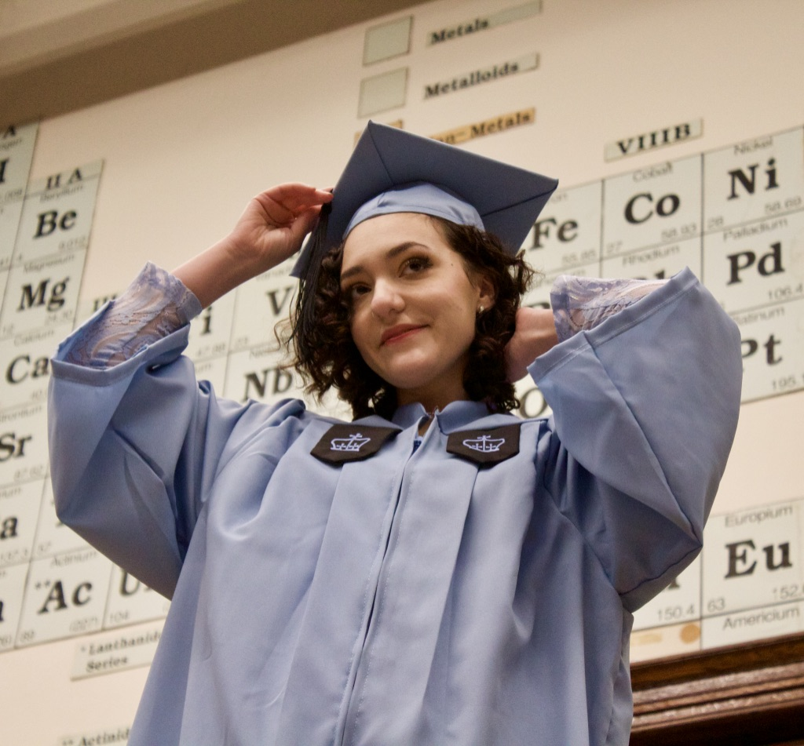

About Me
My name is Ky Pecord and as a tutor I share my passion for learning with others. After working with Ivy League students, in New York City public schools, in the New Orleans charter system, one thing is clear to me - nothing works for everyone. My mission is to provide a personalized educational experience suited to every student’s unique needs and interests.
I graduated Magna Cum Laude from Columbia University in 2019 with a degree in Biochemistry and extensive humanities coursework. There, I began tutoring organic chemistry, biology, and writing, finding joy in sharing the process of learning with others. I also began working in early-literacy programs, fostering the enjoyment of reading in a NYC public school. I also shared my experience with standardized testing, college admissions, and financial aid as a youth counselor in my hometown of Hudson, NY. After graduating and moving to New Orleans, I taught English as a Second Language in the charter school system.
Alongside tutoring college students, I hope to provide students in K-12 schools or those seeking an alternative/homeschool education during this time a supplement to their education that is personalized, rigorous, and guided by standards, but steered by students themselves, whether that means support for their school curriculum, a standards-based plan we develop together, or an enrichment lesson in a whole new subject.
I graduated Magna Cum Laude from Columbia University in 2019 with a degree in Biochemistry and extensive humanities coursework. There, I began tutoring organic chemistry, biology, and writing, finding joy in sharing the process of learning with others. I also began working in early-literacy programs, fostering the enjoyment of reading in a NYC public school. I also shared my experience with standardized testing, college admissions, and financial aid as a youth counselor in my hometown of Hudson, NY. After graduating and moving to New Orleans, I taught English as a Second Language in the charter school system.
Alongside tutoring college students, I hope to provide students in K-12 schools or those seeking an alternative/homeschool education during this time a supplement to their education that is personalized, rigorous, and guided by standards, but steered by students themselves, whether that means support for their school curriculum, a standards-based plan we develop together, or an enrichment lesson in a whole new subject.